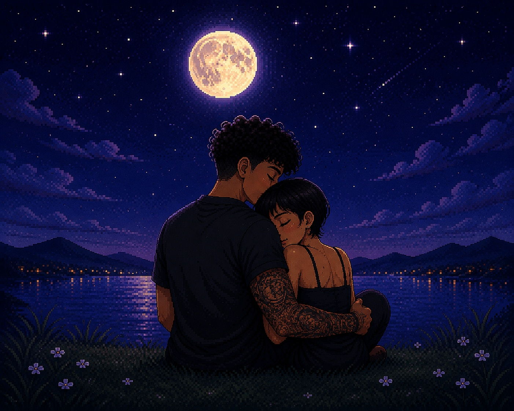

um lugar tranquilo, só nosso
Debaixo da mesma lua

Que, por alguns instantes, o mundo fique quietinho.
Que a gente encontre paz no abraço um do outro.
♫ UMA MÚSICA PARA ACOMPANHAR ESSE MOMENTO
▶ Ouvir Can't Help Falling In Love — Elvis PresleyA música abre no YouTube. A disponibilidade de anúncios depende da plataforma, da conta e do navegador.